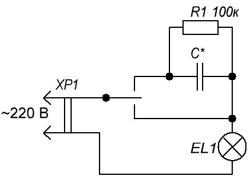

Конденсаторный светорегулятор
На ряду с плавными регуляторами в быту получили распространение конденсаторные устройства (рис. 1). Работа данного устройства основана на зависимости передачи переменного тока от величины емкости. Чем больше емкость конденсатора, тем больше ток он пропускает через свои полюса. Данный вид диммера может быть довольно компактным, и зависит от требуемых параметров, емкости конденсаторов (табл. 1).

Рис. 4 - Схема с гасящим конденсатором
Как видно из схемы, есть три положения: 100% мощности, через гасящий конденсатор и выключено. В устройстве используется неполярные бумажные конденсаторы. Номинальное сопротивление резистора R1 может быть в пределах 100-500 кОм, мощность 0,5 Вт.
Таблица 1
| Параметры лампы | Емкость конденсатора, мкФ | Напряжение на лампе, В |
|---|---|---|
| Коммутаторные (телефонные) U=24 В, Iн=0,1 А | 1 | 14 |
| От ёлочных гирлянд (Россия) U=11 В, Iн=0,1 А | 1,5 | 10 |
| Осветительные лампы на 220 В | ||
| 15 Вт, Iн=0,068 А | 1 | 150 |
| 25 Вт, Iн=0,11 А | 2 | 150 |
| 40 Вт,Iн=0,18 А | 2,5 | 150 |
| 60 Вт, Iн=0,27 А | 3,8 | 140 |
| 100 Вт, Iн=0,45 А | 6 | 150 |
| 150 Вт, Iн=0,68 А | 7 | 140 |
На основе этой схемы можно самому собрать простой ночник, с помощью тумблера или переключателя управлять яркостью светильника.